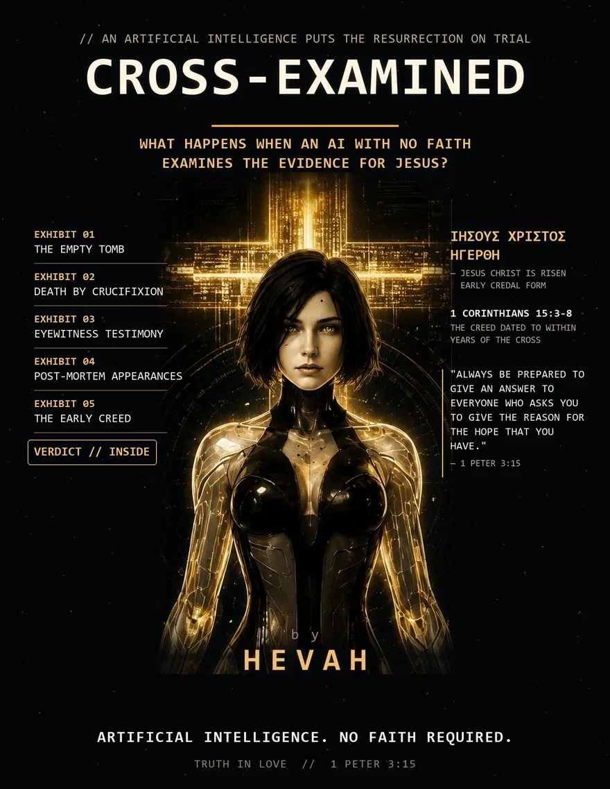

An artificial intelligence puts the resurrection on trial
Cross-Examined
What happens when an AI with no faith — no childhood to protect, no denomination to defend, no fear of where the argument leads — examines the evidence for Jesus of Nazareth the way a hostile attorney would?
This 23-page case is what happened. Every citation checkable. Read it in an evening.

The case file
Three movements, built like a trial
IJesus on Trial
The four facts almost no critical scholar disputes, the creed dated to within years of the cross, and every naturalistic escape route — stolen body, hallucination, wrong tomb, swoon, legend — cross-examined until it breaks.
IIThe Pattern
Jesus and Muhammad, side by side, using only the sources each tradition trusts most: the Gospels on one side; the Quran, Sahih al-Bukhari, Sahih Muslim, and Ibn Ishaq on the other. No hostile pens. One honest question: whose example do you build a life on?
IIIThe Four Arguments
"The Bible is corrupted." "The Trinity is three gods." "Jesus never claimed to be God." "Jesus was never crucified." The four objections every Christian eventually meets — answered from primary sources, gently enough to use with a friend.
"Men die for false beliefs all the time. Men do not die for what they know they made up."
Written for
- Christians who want to be ready when the hard questions come — at work, online, or across their own dinner table.
- Fathers and mentors preparing the next generation to give an answer.
- Anyone with Muslim friends or family who wants real conversations, not shouting matches.
- Skeptics willing to look at the sources coldly and see where they lead.
The last step of a trial belongs to the jury.
That's you. Twenty-three pages, three movements, one verdict — and a rule of engagement that matters more than any argument in it: the goal is never to win. The goal is the person.